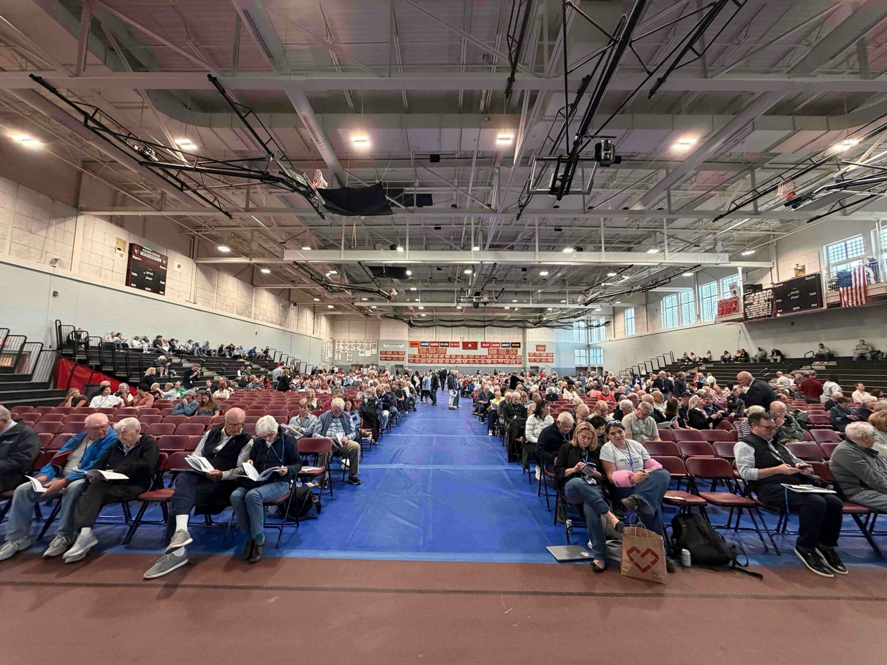
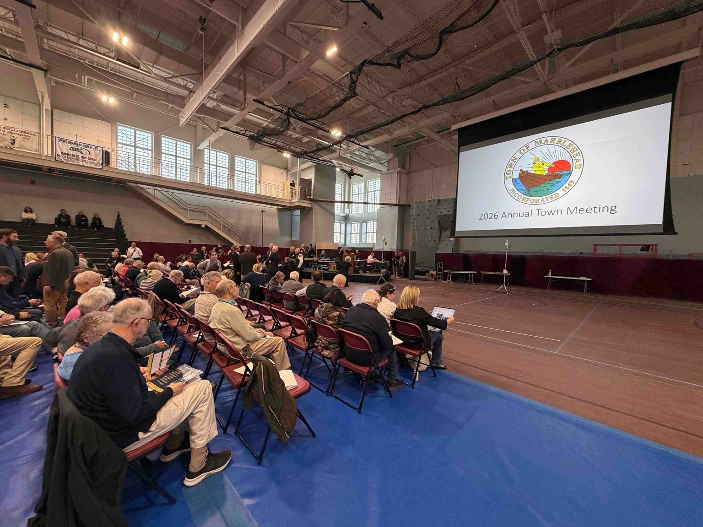
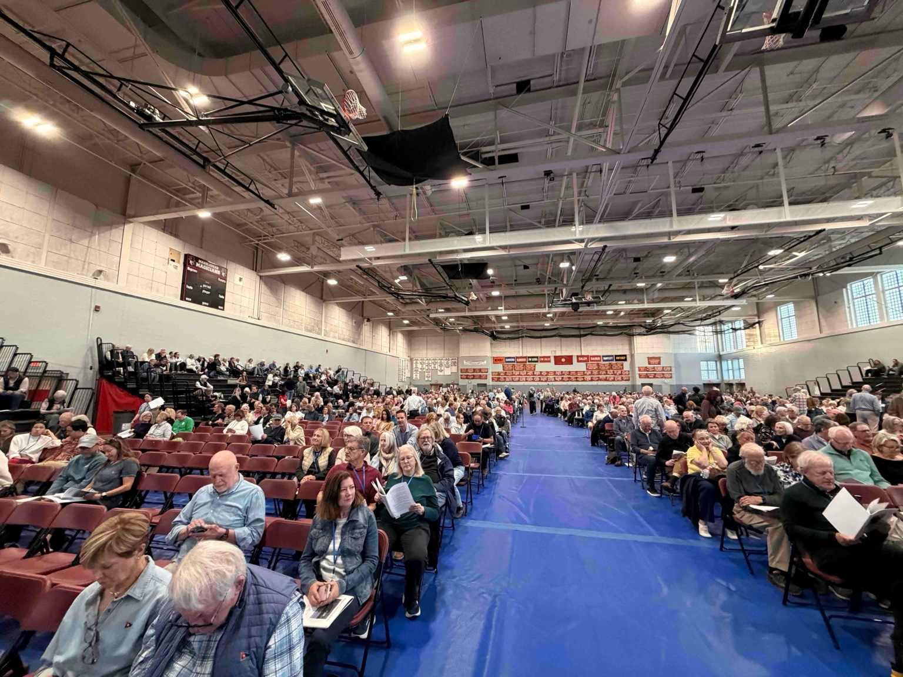
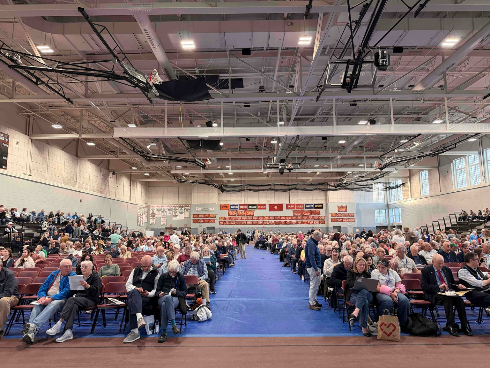
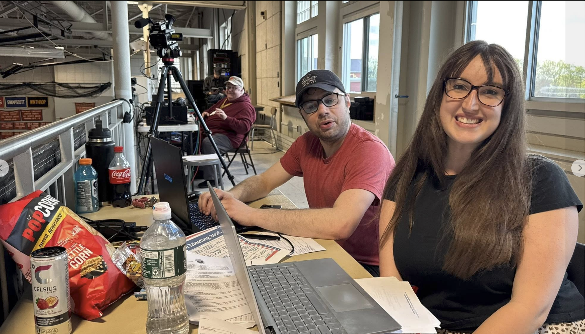
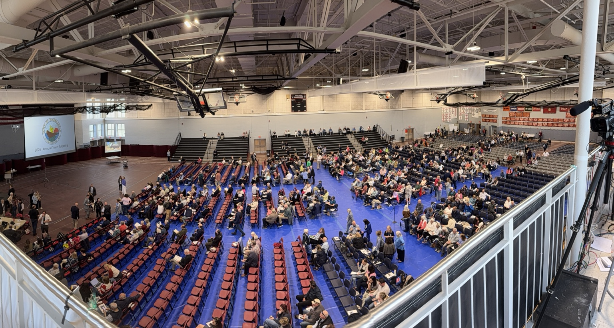

Support the reporting behind tonight's coverage. The Marblehead Independent is free, independent and powered entirely by readers — 110 Marblehead neighbors already chip in, with a goal of 175 by July. Become a member to keep local journalism going, and if you haven't yet, sign up for our free weekly newsletter.
For the best experience, turn your phone horizontal.
Monday, May 4 · 7 p.m. · Marblehead High School Field House, 2 Humphrey St.
BY WILL DOWD
Tonight · Live coverage
Voters take the floor at 7 p.m. at the Marblehead High School Field House to work through 40 warrant articles — among them the 3A multi-family overlay, the FY27 budget and a tiered Proposition 2½ override package. Follow the live feed below for updates as the night unfolds, then scroll to the tracker for the status of all 40 articles.
1,200 voters turn out as Attridge opens 377th annual Town Meeting
Town Moderator Jack Attridge opened the 377th annual Marblehead Town Meeting to a crowd he said totaled roughly 1,200 voters — well past the 300-person quorum and well past the nights he remembered working the phones to fill the room. "Wow. Thank you," Attridge said. "I can remember getting on the phone to try to get people to show up. So this is fantastic."
Attridge laid out the ground rules. Individual speakers after a presentation get a strict two-minute limit at the aisle microphones, with all comments routed through the moderator and no back-and-forth between voters. Initial presentations from town officials are allotted 10 minutes. Speakers must state their name and address. Subsidiary motions to a main motion may be required in writing and submitted to the lectern.
The warrant carries 40 articles, Attridge said, with 12 main motions sponsors plan to move for indefinite postponement. Those postponements and routine business votes will be taken by show of hands. This is the third year of electronic voting. Attridge said voting windows ran 30 seconds on quieter nights last year and three minutes when the room was full, and asked voters to test their clickers on a non-binding calibration question: Will Marblehead beat Swampscott in the Thanksgiving Day football game? Devices are being tested now.
Past practice, Attridge said, is to check in with the assembly any time the meeting runs past 10 p.m. He reminded voters of the bylaw requiring speakers to confine remarks to the question before the meeting, avoid personalities and sit down when finished. "The assembly deserves order," he said, "and I'll not tolerate catcalling or disruptions to the meeting."
7:03 p.m.
Gavel-in: 2026 Annual Town Meeting is now in session
The 2026 Annual Town Meeting is gaveled into session. The Town of Marblehead seal — "Incorporated 1649" — glows from the projection screen at the front of the floor as voters take their seats. Forty articles ahead.

Katie Ring / The Marblehead Independent

Katie Ring / The Marblehead Independent

Katie Ring / The Marblehead Independent

Katie Ring / The Marblehead Independent
7:00 p.m.
Town Meeting not yet in session
The 7 p.m. start time has passed and Town Meeting is not yet in session. Voters are still settling into their seats. We'll post the gavel as soon as it falls.
6:57 p.m.
Outside the high school, an Article 40 sponsor hands out copies of the Constitution
Earlier this evening, outside the Marblehead High School, Lynn Nadeau was passing out pocket-sized 250th-anniversary copies of the U.S. Constitution to voters arriving for Town Meeting. Nadeau is one of the citizen petitioners behind Article 40, a non-binding resolution affirming the town's commitment to the Declaration of Independence and the Constitution. The article, sponsored by Kate Borten, Lynn Nadeau and others, comes near the end of the warrant.Lynn Nadeau, a citizen petitioner behind Article 40, hands out 250th-anniversary copies of the U.S. Constitution outside Marblehead High School before the start of the 2026 Annual Town Meeting. Will Dowd / The Marblehead Independent
6:51 p.m.
In the press balcony, working alongside Essex News Media and MHTV
Filing tonight from the press balcony with Sophia Harris, editorial director at Essex News Media, the regional newsroom whose papers include the Daily Item, the Salem News and the Gloucester Daily Times. Behind us, Jon Caswell, programming manager of Marblehead Community Access and Media, is setting up the camera that will carry tonight's livestream to viewers at home. Two laptops, one warrant, plenty of kettle corn.

Sophia Harris, editorial director at Essex News Media, and Will Dowd of The Marblehead Independent set up in the press balcony ahead of gavel-in. In the background, Jon Caswell, programming manager of Marblehead Community Access and Media, runs the livestream camera. Will Dowd / The Marblehead Independent
6:37 p.m.
Good evening, Marblehead
We're up in the press balcony at the Marblehead High School Field House — left side as you face the main stage — for the 2026 Annual Town Meeting. The room is filling in steadily, with neighbors drifting in and finding seats among rows of red folding chairs.

The Field House fills ahead of gavel-in. Will Dowd / The Marblehead IndependentIf you can't be in the room, Marblehead Community Access and Media is streaming the proceedings. The YouTube stream goes live at 6:45 p.m. — watch on MHTV. You can also tune in on Comcast 8 (HD 1073) or Verizon 28 (HD 2128).
Stay with us here for live updates from gavel to adjournment. Forty articles tonight, including the 3A multifamily overlay, the FY27 operating budget and the tiered Proposition 2½ override package. Quorum is 300. Gavel falls at 7.
On a phone, rotate to landscape for the best reading experience.
40 of 40 shown
Border key: High stakes Notable Routine
Article
Title / key detail
Category
Vote required
Recommendation
Town Meeting vote
Tiered override explainer
Article 23 sets the no-override baseline at $109.78M (general fund).
Three tiered override ballot questions will ask voters for $9M, $12M or $15M in new revenue, split 62/38 between schools and town under an MOU.
Article 29 is now the primary town-side override article: it is expected to carry the roughly $4.3M FY27 contingent appropriation, representing year one of the highest tier, while also framing how the three-year, three-tier structure would work.
Article 28 remains the school supplemental article. Officials said the exact legal wording and detailed breakdown for Article 29 were still being refined with town counsel as of April 22, but the policy decision to anchor the override structure there had already been made.
A separate $2,298,575 trash override would fund curbside collection through the tax levy.
If both overrides fail, Articles 28 and 29 are void — and the $2.19M
curbside collection line item in Article 23 converts to a
roughly $262/household fee administered by the Board of Health.
Source: 2026 Annual Town Meeting Warrant · Select Board-approved FY2027 budget · April 6 FinCom warrant hearing · April 8 Select Board override vote · April 9 School Committee override vote